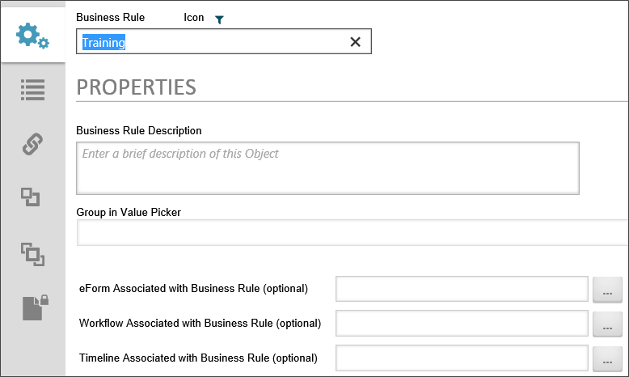
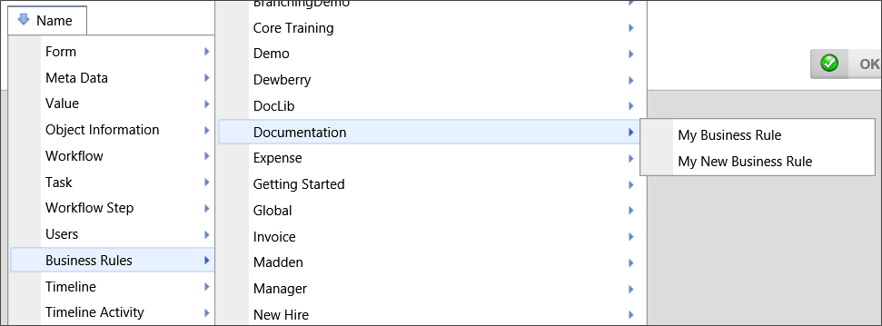
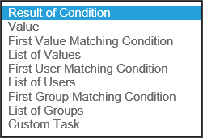

|
|
Lesson Contents | In this Lesson, You will learn the Basics of configuring a Business Rule. |
As described in Module 1, Lesson 2, business rules define some aspect of a business process and control its operation.
As with the other Process Director objects, you can create a Business Rule by selecting "Business Rule" from the Create New… dropdown in the upper right corner of the Process Director screen. When the Create Business Rule screen appears, enter a name for the business rule, then click the OK button to create the Business Rule and open its configuration screen.
All Business Rules share some common, optional properties in addition to the Name, which is required.

Enables you to provide a detailed description of the Business Rule.
When selecting a business rule, you can add a group name here to display the business rules in different menu groups. Any time you select a system variable to use for a condition in a Form field, Process Timeline activity, etc., you select the value you desire from a dropdown value picker menu that appears in the Choose System Variable dialog box. Setting a group name in this setting will organize the menu into groups, from which you can select a business rule. Take a look at the example below.

In the example above, there is a group called Documentation in the value picker that contains two different business rules. The Group in Value Picker setting is where you create this organizational structure.
If your business rules depends on a value in a Form, you can set the Form here, to easily choose the Form field when setting conditions for the business rule.
If your business rules depends on a value in a Workflow, you can set the Workflow here, to easily choose the value when setting conditions for the business rule.
If your business rules depends on a value in a Process Timeline, you can set the Process Timeline here, to easily choose the value when setting conditions for the business rule.
You can select a number of different value types for a Business Rule to return by selecting the value type from the Returns dropdown.

| VALUE RETURNED | DESCRIPTION |
|---|---|
| Result of Condition | A true or false response based on whether the specified condition is true. |
| Value | A user-defined value to return, based on the result of the condition. |
| First Value Matching Condition | This option will return a user-defined value for the first condition evaluated as true, when multiple conditions are evaluated. |
| List of Values | A comma-separated list of values returned from the evaluation of the condition. |
| First User Matching Condition | This option will return a user's name for the first condition evaluated as true, when multiple conditions are evaluated. |
| List of Users | A comma-separated list of users' names returned from the evaluation of the condition. |
| First Group Matching Condition | This option will return a user group name for the first condition evaluated as true, when multiple conditions are evaluated. |
| List of Groups | A comma-separated list of users groups' names returned from the evaluation of the condition. |
| Custom Task | A custom task to be initiated when a condition evaluates as true. |
Once you have determined what value(s) the business rule might return, you need to set the conditions that determine the return value(s). As previously mentioned, Business rules generally evaluate a condition or set of conditions, and then return a value based on the results of the evaluation. A condition is a true or false statement that is evaluated in order to determine an appropriate response.
The default condition a Business Rule returns is true. As this is not generally useful, you can click on the Conditions link that is labeled "* true *" to open the condition builder to create the condition or conditions you desire, and, optionally, the specific values you wish to return.